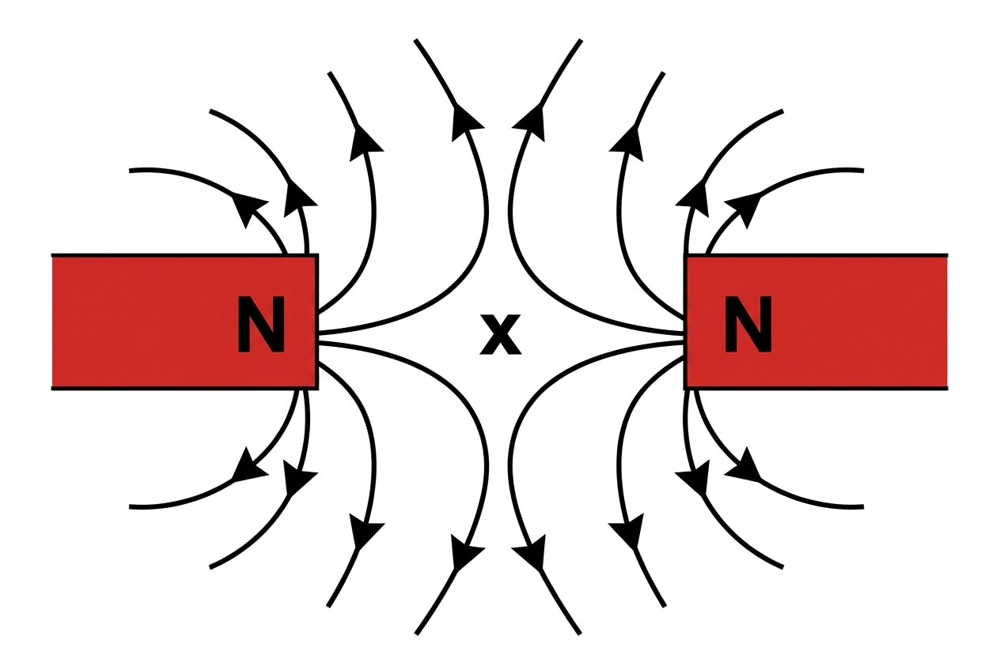
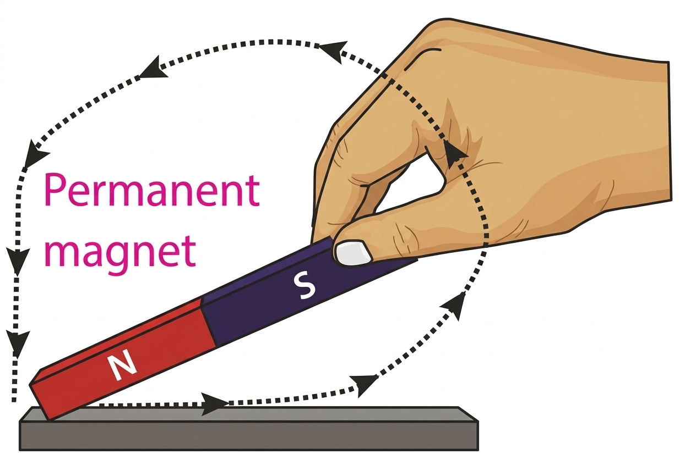
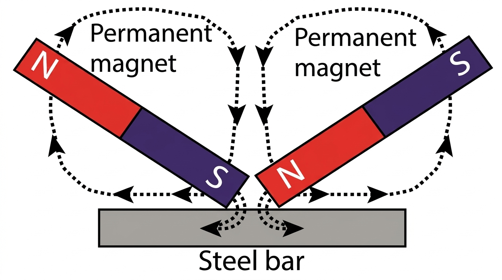
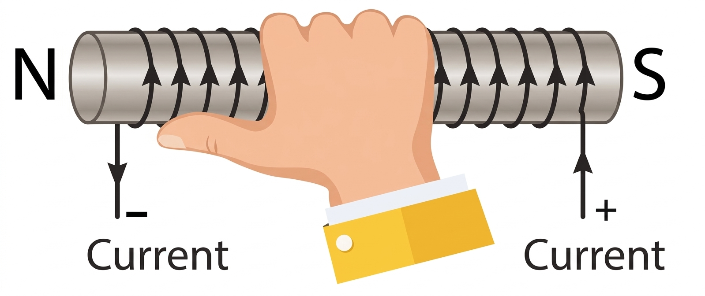
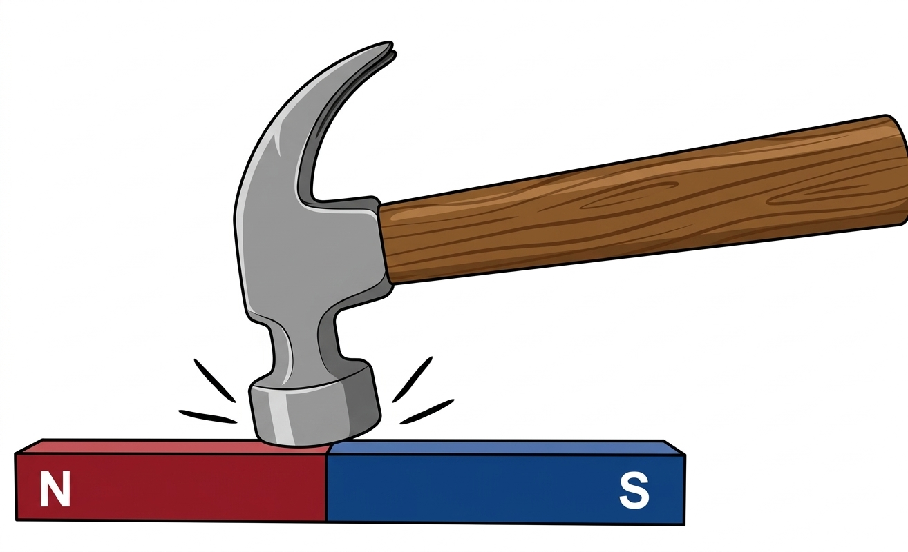
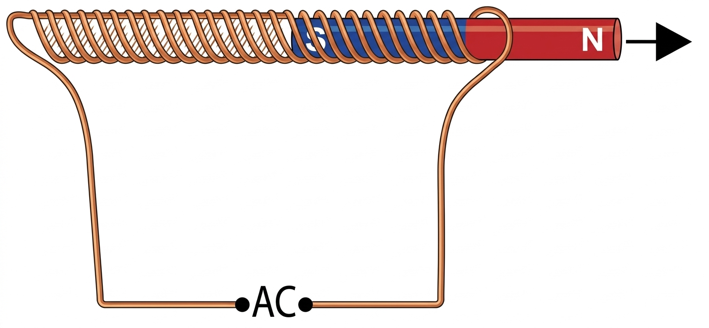

📘 Chapter 8: Magnetism – Short Answer Questions
Prepared by Muhammad Tayyab, Subject Specialist Physics, Govt Christian High School Daska. Based on PECTAA 2026 syllabus (National Curriculum 2023).
📖 What's Inside: This section covers short answer questions from Chapter 8 Magnetism including Magnetic and Non-Magnetic Materials, Magnetism, Properties of Magnets, Magnetic Field, Magnetic Lines of Force, Electromagnets, Magnetic Domains, Paramagnetic vs Diamagnetic Materials, Ferromagnetic Materials, Methods of Magnetization, Demagnetization, Magnetic Recording, and Magnetic Shielding. Each question is presented with a detailed answer as per the official PECTAA 2026 Physics curriculum. Perfect for Punjab Boards (Lahore, Gujranwala, Multan, etc.) and all BISE boards across Pakistan.
📚 Related Resources – Chapter 8: Magnetism
Magnetism covers magnetic materials, magnetic fields, electromagnets, electromagnetic induction, and applications.
📑 Quick Jump to Questions
📖 Short Answer Questions & Answers (PECTAA 2026)
1 Define magnetic and non-magnetic materials.
Answer:
Magnetic Materials: Materials such as iron, nickel and cobalt that are attracted by a magnet are called magnetic materials.
Non-Magnetic Materials: Materials that are not attracted, such as copper, brass, wood, glass, and plastic, are called non-magnetic materials.
✅ Magnetic: iron, nickel, cobalt | Non-magnetic: copper, brass, wood, glass, plastic
2 What is magnetism?
Answer:
Magnetism is a force that acts at a distance upon magnetic materials. These materials are attracted to magnets.
✅ Force acting at a distance on magnetic materials
3 Name the properties of magnets.
Answer:
The properties of magnets are:
- (i) Magnetic Poles
- (ii) Attraction and Repulsion of Magnetic Poles
- (iii) Identification of a Magnet
- (iv) Non-existence of Isolated Magnetic Pole
✅ Magnetic poles, attraction/repulsion, identification, no isolated poles
4 State the property of a freely suspended bar magnet.
Answer:
If a bar magnet is suspended horizontally through a string and allowed to come to rest, it will point in north-south direction. The end of the magnet that points north is called the north magnetic pole (N) and the end that points south is called the south magnetic pole (S).
✅ Freely suspended magnet aligns in N-S direction
5 State the law of attraction and repulsion of magnetic poles.
Answer:
When two freely suspended bar magnets are placed close to each other, the two north poles will repel each other. So will the two south poles. However, if the north pole of one is placed near the south pole of the other, the poles will attract.
We can say that Like poles repel and unlike poles attract.
✅ Like poles repel, unlike poles attract
6 How can you identify whether an object is a magnet or simply a magnetic material?
Answer:
To identify whether an object is a magnet or simply a magnetic material, we can bring its one end close to any pole of a suspended bar magnet. If it is attracted, then we can conclude that the end of the object is either of opposite pole to that of the suspended magnet or it is simply a magnetic material.
Then we should bring the same end of the object close to the other end of the suspended magnet. If the object is again attracted, it is not a magnet but it is a magnetic material. If it is repelled by the other end of the suspended magnet, then the object is a magnet.
✅ Repulsion is the real test — if repelled, it's a magnet
7 What is the real test to identify a magnet?
Answer:
The repulsion between the like poles is a real test to identify a magnet.
✅ Repulsion between like poles
8 Is an isolated magnetic pole possible? OR If we break a bar magnet into two equal pieces, can we get N-pole and S-pole separately?
Answer:
No, an isolated magnetic pole is not possible. If a bar magnet is divided into pieces, each piece becomes a complete magnet having both N and S poles.
✅ No — each piece becomes a complete magnet with both N and S poles
9 What is induced magnetism?
Answer:
When a magnetic material such as iron or steel is made a magnet by the presence of a magnet, the magnetism induced in it is called induced magnetism or magnetization.
✅ Magnetism induced by presence of a magnet
10 What are temporary and permanent magnets?
Answer:
Temporary Magnets: Temporary magnets are the magnets that work in the presence of a magnetic field of permanent magnets. Once the magnetic field vanishes, they lose their magnetic properties. Usually, soft iron is used to make temporary magnets. Paper clips, office pins, iron nails and electromagnets are examples of temporary magnets.
Permanent Magnets: Permanent magnets retain their magnetic properties forever. These are either found in nature or artificially made by placing objects made of steel and some special alloys in a strong magnetic field for a sufficient time.
Examples of permanent magnetic materials are cobalt, alnico and ferrite.
✅ Temporary: lose magnetism when field removed | Permanent: retain magnetism forever
11 Define magnetic field.
Answer:
A magnetic field is the region around a magnet where another magnetic object experiences a force on it.
✅ Region where magnetic force is experienced
12 What are magnetic lines of force?
Answer:
Magnetic lines of force are imaginary lines used to represent a magnetic field. They follow the pattern formed by iron filings around a magnet and show the direction and strength of the magnetic field.
✅ Imaginary lines showing field direction and strength
13 What is the direction of magnetic field?
Answer:
The direction of the magnetic field at any point in space is the direction indicated by the N-pole of a magnetic compass needle placed at that point.
✅ Direction indicated by N-pole of compass needle
14 What is the strength of the magnetic field?
Answer:
The strength of the magnetic field is proportional to the number of magnetic lines of force passing through unit area placed perpendicular to the lines.
Thus, the magnetic field is stronger in regions where the field lines are relatively close together and weaker where these are far apart.
✅ ∝ number of field lines per unit area | Stronger where lines are close
15 What is a neutral point?
Answer:
A neutral point is a point where the magnetic field due to one magnet cancels out that due to the other magnet. As shown in figure, point 'x' is a neutral point.

Figure: Neutral point X where fields cancel out
✅ Point where fields of two magnets cancel out
16 What are the uses of permanent magnets?
Answer:
Permanent magnets are used in D.C motors, A.C and D.C electric generators, moving coil loud-speakers, door catchers and to separate iron objects from different mixtures.
✅ Motors, generators, loudspeakers, door catchers, separation
17 How does an A.C generator work?
Answer:
When a coil is rotated between the poles of a permanent magnet, the magnetic field through the coil changes and an emf is induced between the ends of the coil. On connecting these ends to an external circuit, an alternating current (A.C) flows through the circuit.
✅ Rotating coil in magnetic field induces emf → A.C flows
18 How is a permanent magnet used in a moving coil loudspeaker?
Answer:
A voice coil attached to the cone of the speaker is slipped over one pole of the permanent magnet.
The A.C interacts with the magnetic field to generate a varying force that pushes and pulls on the voice coil and the attached cone, causing the cone to vibrate and produce sound in the air.
✅ Voice coil + permanent magnet → varying force → cone vibrates → sound
19 What is an electromagnet?
Answer:
An iron nail or a rod becomes a magnet when an electric current passes through a coil of wire around it. It is called an electromagnet.
✅ Iron core + current-carrying coil = electromagnet
20 Why is an electromagnet called a temporary magnet?
Answer:
An electromagnet remains a magnet as long as electric current passes through the coil. When the current is stopped, it no longer remains a magnet.
✅ Magnetism lasts only while current flows
21 How can the strength of an electromagnet be increased?
Answer:
The strength of an electromagnet can be increased by:
- (i) Increasing the number of cells in the battery.
- (ii) Increasing the number of turns of the coil.
✅ More cells (current) | More turns of coil
22 Give five uses of electromagnets.
Answer:
Electromagnets are used in:
- (i) Electric bells
- (ii) Telephone receivers
- (iii) Magnetic relays
- (iv) Circuit breakers
- (v) Electromagnetic cranes
They are also used in reed switches, tape recorders and maglev trains.
✅ Electric bells, telephone receivers, relays, circuit breakers, cranes
23 What is a magnetic relay?
Answer:
This is a type of switch which works with an electromagnet. It is an input circuit which works with a low current for safety purpose. When it is turned ON it activates another circuit which works with a high current.
✅ Electromagnet switch — low current controls high current circuit
24 What is a circuit breaker?
Answer:
A circuit breaker is designed to pass a certain maximum current through it safely. If the current becomes excessive, it switches OFF the circuit. Thus, electric appliances are protected from burning.
✅ Excessive current → switches OFF → protects appliances
25 What is a Maglev train and how does it use electromagnets?
Answer:
A Maglev train is a magnetically levitated train that floats above the track using electromagnets. It has no wheels and faces no friction, allowing it to reach speeds up to 400 kmh⁻¹. Levitation electromagnets lift the train, while propulsion electromagnets push and pull it forward along the guideway.
✅ Magnetic levitation + propulsion → no friction → high speed (400 km/h)
26 Define a magnetic dipole.
Answer:
If an atom has some resultant magnetic field, it behaves like a tiny magnet. It is called a magnetic dipole.
✅ Atom with resultant magnetic field = tiny magnet (magnetic dipole)
27 What is a magnetic domain? (Domain Theory of Magnetism)
Answer:
In ferromagnetic materials (like iron, nickel, cobalt), large groups of neighboring atoms (about 10¹⁶) have parallel electron spins. They form a highly magnetized region of about 0.1 mm size called a magnetic domain. Each domain behaves as a small magnet with its own north and south poles.
✅ Highly magnetized region (~0.1 mm) behaving as a small magnet
28 What is the domain theory of magnetism?
Answer:
According to the domain theory, ferromagnetic materials are made up of small regions called magnetic domains. Each domain behaves as a small magnet with its own north and south poles. In an unmagnetized material, these domains are randomly oriented, canceling each other's effects. When an external magnetic field is applied, the domains align in the direction of the field, magnetizing the material.
✅ Ferromagnetic materials = small magnetized regions (domains) that align with external field
29 Differentiate between paramagnetic and diamagnetic materials.
Answer:
Paramagnetic materials: If the orbital and spin axes of the electrons in an atom are so oriented that their fields support one another and the atom behaves like a tiny magnet, the materials with such atoms are called paramagnetic materials. Examples are aluminium and lithium.
Diamagnetic materials: Magnetic fields produced by both orbital and spin motions of the electrons in an atom may add up to zero. In this case, the atom has no resultant field. The materials with such atoms are called diamagnetic materials. Examples are copper, bismuth and water.
✅ Paramagnetic: fields support each other (Al, Li) | Diamagnetic: fields cancel out (Cu, Bi, water)
30 What are ferromagnetic materials?
Answer:
There are some solid substances such as iron, steel, nickel, cobalt, etc. in which cancellation of any type does not occur for large groups of neighbouring atoms of the order of 10¹⁶ because they have electron spins that are naturally aligned parallel to each other. These are known as ferromagnetic materials.
✅ Electron spins naturally aligned parallel → strong magnetism (Fe, Steel, Ni, Co)
31 Why is soft iron used in electromagnets and transformers?
Answer:
In soft iron, the magnetic domains are easily oriented upon applying an external magnetic field and easily return to random positions when the field is removed. Therefore, soft iron is ideal for temporary magnetism in electromagnets and transformers.
✅ Domains align and return easily → ideal for temporary magnetism
32 Why is steel used to make permanent magnets?
Answer:
Steel is not easily oriented to change its magnetic order and requires a very strong external magnetic field. However, once oriented, it retains its domain alignment permanently. Hence, steel is used to make permanent magnets.
✅ Domains resist change but retain alignment permanently
33 What are the methods of magnetizing a steel bar?
Answer:
A steel bar can be magnetized by:
- (i) Stroking method (Single-Touch Method and Double-Touch Method)
- (ii) Using a solenoid
✅ Stroking (single/double touch) | Solenoid
34 What is the single-touch method?
Answer:
A steel bar is placed on a horizontal surface. It is stroked from one end to the other several times in the same direction using the same pole (say N) of the permanent magnet. Every time the magnet is lifted up sufficiently high on reaching the other end of the bar.

Figure: Single-touch method
✅ Stroking repeatedly in same direction with same pole
35 What is the double-touch method?
Answer:
In this method, stroking is done from the centre of the steel bar onwards with the unlike poles of two permanent magnets at the same time. This method is more efficient than the single-touch method.
In both stroking methods, the poles produced at the ends of the magnetized steel bar are of opposite polarity to that of the stroking pole.

Figure: Double-touch method
✅ Stroking from centre with unlike poles of two magnets
36 How is a steel bar magnetized using a solenoid?
Answer:
A steel bar is placed inside a solenoid having several hundred turns of insulated copper wire. When direct current is passed through the solenoid, the steel bar becomes a magnet.
✅ Steel bar inside solenoid + DC current → magnetized
37 State the Right Hand Grip Rule.
Answer:
Grip the solenoid with the right hand such that fingers are curled along the direction of current (positive to the negative terminal of the battery) in the solenoid, then the thumb points to the N-pole of the bar end.
OR
Grip the solenoid with the right hand so fingers curl in the direction of current, and the thumb points to the N-pole.

Figure: Right Hand Grip Rule
✅ Fingers curl along current → thumb points to N-pole
38 Name three methods of demagnetization.
Answer:
The three methods of demagnetization are:
- (i) Heating
- (ii) Hammering
- (iii) Alternating Current
✅ Heating, Hammering, Alternating Current
39 How can a magnet be demagnetized by heating?
Answer:
Thermal vibrations tend to disturb the order of the domains. Therefore, when a magnet is heated strongly, it loses its magnetism very quickly.
✅ Heat disturbs domain order → loses magnetism
40 How is hammering used for demagnetisation?
Answer:
If we beat a magnet, the domains lose their alignment and the magnet is demagnetised.

Figure: Hammering a magnet
✅ Hammering disturbs domain alignment → demagnetized
41 How is alternating current used for demagnetisation?
Answer:
When an alternating current (A.C) is flowing through a long solenoid, a magnet moved out slowly from inside of the solenoid is demagnetised.

Figure: Demagnetization using A.C.
✅ Magnet moved out of A.C solenoid → demagnetized
42 What is magnetic recording?
Answer:
Magnetic recording uses electromagnets and magnetization of magnetic materials to record sound, video and data in the form of electrical signals.
✅ Records data using electromagnets and magnetic materials
43 What materials are commonly used for magnetic recording?
Answer:
Common magnetic recording mediums are magnetic tapes and disk recorders. These materials are usually coated with iron oxide.
✅ Magnetic tapes and disks coated with iron oxide
44 How is sound recorded on a magnetic tape?
Answer:
Sound is converted into electrical signals in the form of varying currents. These currents pass through the recording head, which becomes an electromagnet and induces magnetism in the coating of the moving tape.
✅ Sound → electrical signals → recording head (electromagnet) → magnetizes tape
45 How is information recorded on a hard disk?
Answer:
A magnetic head writes binary digits 1 or 0 by magnetizing tiny spots on the spinning disk in different directions. It reads the digit by detecting the direction of magnetization.
✅ Binary data stored as magnetization directions on spinning disk
46 What is the advantage of a magnetic disk over a tape recorder?
Answer:
A disk unit can read or write a recording instantly while locating desired information on tape may take many minutes.
✅ Instant read/write on disk vs. slow search on tape
47 Why should electronic devices be protected from strong magnetic fields?
Answer:
Strong magnetic fields can have harmful magnetic effects on sensitive electronic devices. They can be protected by enclosing them in boxes made of soft iron.
✅ Harmful to sensitive devices → protect with soft iron enclosure
48 Define magnetic permeability.
Answer:
Permeability is the ability of a material to allow magnetic flux or lines of force to pass through it when placed inside a magnetic field.
✅ Ability to allow magnetic flux to pass through
49 Why is soft iron used for magnetic shielding?
Answer:
Soft iron is used for magnetic shielding because it has high magnetic permeability. Magnetic flux is therefore established in the soft iron casing rather than in the sensitive device, protecting it from strong magnetic effects.
✅ High permeability → flux passes through casing, not device
📐 Key Concepts – Magnetism (Short Questions)
Magnetic Materials: Iron, Nickel, Cobalt
Law of Poles: Like poles repel, unlike poles attract
Real Test: Repulsion between like poles
Magnetic Field: Region where magnetic force is experienced
Neutral Point: Fields cancel out
Electromagnet: Iron core + current-carrying coil
Magnetic Domain: Highly magnetized region (~0.1 mm)
Right Hand Grip Rule: Fingers along current → thumb to N-pole
Demagnetization: Heating, Hammering, Alternating Current
Magnetic Shielding: Soft iron (high permeability)
💡 Exam Tip:
For short answer questions, write concise and accurate answers. Use definitions, formulas, and examples where required. Use diagrams where applicable. These questions test your understanding of fundamental concepts like magnetism, magnetic field, electromagnets, domain theory, magnetization and demagnetization methods, and magnetic recording. These questions follow the PECTAA 2026 pattern and are prepared by Subject Specialist Muhammad Tayyab.
Chapter 1Physical Quantities and Measurements
Chapter 2Kinematics
Chapter 3Dynamics
Chapter 4Turning Effect of Forces
Chapter 5Work and Energy
Chapter 6Mechanical Properties of Matter
Chapter 7Thermal Properties of Matter
Chapter 8✨ Magnetism
Chapter 9Nature of Science
📖 Complete syllabus coverage for Class 9 Physics (PECTAA 2026) – Chapters 1 to 9
Created by Hira Science Academy | Aligned with PECTAA 2026 Syllabus